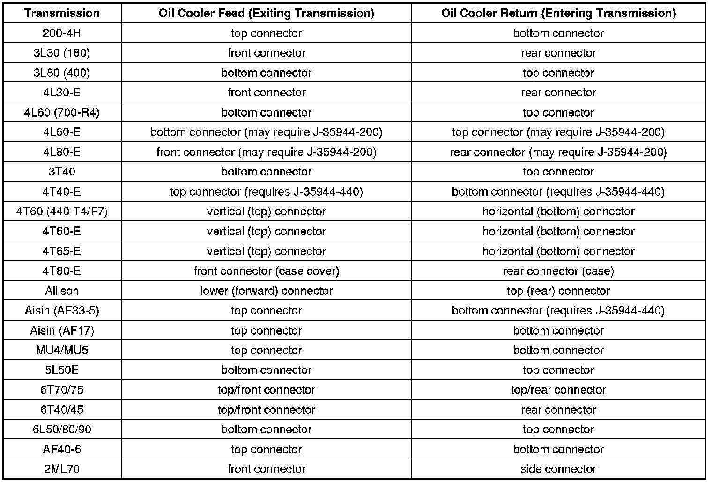

A/T - Fluid Oil Cooler Flow Test
INFORMATIONBulletin No.: 02-07-30-052H
Date: March 26, 2012
Subject: Automatic Transmission Oil Cooler Flow Test Essential Tool J-45096 TransFlow(R)
Models:
2011 and Prior GM Passenger Cars and Light Duty Trucks
2003-2010 HUMMER H2
2006-2010 HUMMER H3
Equipped with Automatic Transmission/Transaxle including Allison(R) Transmissions
Attention:
For model years 2012 and later, refer to SI for "Transmission Fluid Cooler Flushing and Flow Test" procedures.
Supercede:
This bulletin is being revised to clarify special tool use. Please discard Corporate Bulletin Number 02-07-30-052G (Section 07 - Transmission/Transaxle).
Important
All labor operations that include removal of the transmission from the vehicle include labor time to flow check and flush the transmission oil cooler system.
The J-45096 transmission oil cooling system flow test tool replaces the current tool J-35944-A. J-45096 is a self-contained unit utilizing a 12-volt flow meter, shop air supply and DEXRON(R) VI automatic transmission fluid (ATF). In the flush mode, transmission fluid is cycled through the transmission oil cooling system. High-pressure air is automatically injected into the fluid stream adding agitation to the ATF oil to enhance the removal of contaminated ATF oil and debris. In the flow mode, an electronic flow meter is used to measure the flow capability of the ATF oil cooling system. A digital display indicates the ATF oil flow rate in gallons per minute (GPM) along with the amount of ATF oil in the supply vessel, supply vessel ATF oil temperature, machine cycles and the operating mode. In the flush mode, transmission fluid is cycled through the transmission oil cooling system. High-pressure air is automatically injected into the fluid stream adding agitation to the ATF oil to enhance the removal of contaminated ATF oil and debris. The supply oil vessel has 30 L (32 qt) capacity and the waste oil vessel has 32 L (34 qt) capacity. The waste oil vessel is constructed of a translucent composite material that allows the user to easily identify the oil level. The waste oil vessel can accommodate vacuum evacuation and gravity draining. In the code mode, a random, encrypted code is generated that can be used for verification of flow test results.
Current essential cooler line adapters are used to connect the J-45096 to the automatic transmission oil cooler lines that allows the J-45096 to adapt to General Motors passenger cars and light duty trucks, current and past models (except the Pontiac Vibe, Wave and Chevrolet Aveo).
The tool may be adapted for use on the Pontiac Vibe, Wave and Chevrolet Aveo by dealership personnel with a barbed hose connector and rubber hose obtained locally. The Vibe's/Wave's/Aveo's transmission has a transmission oil requirement that is slightly different from DEXRON(R) VI ATF. However, flow checking and flushing the cooler with DEXRON(R) VI automatic transmission fluid is an acceptable service procedure. Very little fluid remains in the cooler after the flow check and flush procedure and the residual DEXRON(R) VI ATF in the cooler is compatible with the Vibe's/Wave's/Aveo's transmission fluid.
Notice
Insufficient oil flow through the ATF oil cooling system will cause premature transmission failure. The required minimum ATF oil flow rate reading is directly related to the supply oil temperature. Refer to the flow rate chart in SI for the oil flow rate specification based on the temperature of the ATF in the supply vessel.
Helpful Hints for Maintaining the Temperature at or above 18°C (65°F)
Important
- The temperature of the supply vessel oil must be 18°C (65°F) or greater for the J-45096 to operate. It is recommended to store the J-45096 in an area of the dealership where the room temperature remains at or above 18°C (65°F) when not in use.
- Do not attempt to increase the fluid temperature in the Transflow(R) machine with an engine oil dipstick, or any other immersion type heater. The Transflow(R) machine has a check valve in the supply reservoir. Inserting a heater will damage the check valve and the subsequent repair expense would be the dealer's responsibility.
- A heater blanket, P/N J-45096-10, is available for the Transflow(R) transmission cooling system flushing tool. This heater fastens around the Transflow(R) internal supply vessel and runs on 110 volts AC. The heater will warm the ATF in the supply vessel to at least 18°C (65°F) and has a thermostat to hold a constant temperature.
Store the Transmission Cooling System Service Tool, J-45096, Transflow(R) machine in a room where the temperature is maintained at or above 18°C (65°F).
Keep the ATF level in the reservoir low when the Transmission Cooling System Service Tool, J-45096, Transflow(R), is not in use. Store several gallons of oil in an area where the temperature is maintained at or above 18°C (65°F). Fill the reservoir of the J-45096 as needed before using the machine on each repair.
With the ATF in a tightly sealed container, place the container in a tub of hot water for a period of time. Then pour the ATF into the reservoir. This method works best with a low fluid level in the reservoir.
Place the Transflow(R) machine in the direct sunlight with the cabinet door open to expose the reservoir to the rays of the warm sun.

Flow/Flush Test Procedure
Important
All labor operations that include removal of the transmission from the vehicle and require the transmission oil pan or transmission side cover to be removed include labor time to flush the transmission oil cooler system.
Refer to SI for Automatic Transmission Oil Cooler Flushing and Flow Test J-45096 for the appropriate procedure.
Important
The J-45096 can be used to flush the transmission oil cooler system on an Allison equipped vehicle, but the flow meter should not be utilized. Refer to SI for Automatic Transmission Oil Cooler Flushing and Flow Test J-45096 for the appropriate flow check procedure.
Machine Displays
After completion of the flow test and flush, the following information is to be recorded on the repair order. This information is displayed on the Transmission Cooling System Service Tool, J-45096, Transflow(R) machine when the dial is in the code position.
- Tested flow rate (displayed in Gallons Per Minute (GPM)
- Temperature (displayed is degrees Fahrenheit)
- Cycle number (a number)
- Seven (or eight) digit Alpha/Numeric flow code (i.e. A10DFB2)
Warranty Information
Important
All labor operations that include removal of the transmission from the vehicle include labor time to flow test the transmission oil cooler system.
Performing a transmission oil cooling system flow test and flush will use between 4.7-7.5 L (5-8 qts) of DEXRON(R)VI transmission fluid. The amount of transmission fluid (ATF), (DEXRON(R)VI) (fluid), that is to be charged for the flush portion of the repair should not exceed the allowable charge for 7.5 L (2 gal) of fluid. This expense should be shown in the Parts Section of the warranty claim document.
The Seven (or eight) digit Alpha/Numeric flow code, i.e. A10DFB2, "MUST" be written on the job card, entered in the warranty claim labor operation Flush Code additional field (when available) and placed in the comments section of the warranty claim. Any repair that requires the technician to contact the Product Quality Center (PQC) must also include the seven digit flow code. The agent will request the seven digit flow code and add the information to the PQC case prior to providing authorization for the warranty claim.

Disclaimer